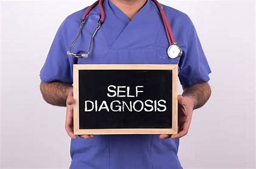

SELF-DIAGNOSIS
Self-diagnosis is the process of diagnosing, or identifying, medical conditions in oneself.
It may be assisted by medical dictionaries, books, resources on the Internet, past personal experiences, or recognizing symptoms or medical signs of a condition that a family member previously had.
Self-diagnosis is prone to error and may be potentially dangerous if inappropriate decisions are made on the basis of a misdiagnosis.
Because of the risks, self-diagnosis is officially discouraged by governments, physicians, and patient care organizations.
Even physicians are discouraged from engaging in self-diagnosis,because doctors also make mistakes in diagnosing themselves.
If the self-diagnosis is wrong, then the misdiagnosis can result in improper health care, including wrong treatments and lack of care for serious conditions.
One of the greatest dangers of self-diagnosis in psychological syndromes is that you may miss a medical disease that masquerades as a psychiatric syndrome.
... Self-diagnosis also undermines the role of the doctor, which is not the best way to start the relationship. ... Then there is the fact that we can know and see ourselves, but sometimes, we need a mirror to see ourselves more clearly. ... By self-diagnosing, you may be missing something that you cannot see.
... Another danger of self-diagnosis is that you may think that there is more wrong with you than there actually is. ... Self-diagnosis is also a problem when you are in a state of denial about your symptoms.
However, self-diagnosis may be appropriate under certain circumstances.All over-the-counter (non-prescription) medications are offered on the assumption that people are capable of self-diagnosis,determining first that their condition is unlikely to be serious and then the possible harm caused by incorrect medication minor.
Some conditions are more likely to be self-diagnosed, especially simple conditions such as head lice and skin abrasions or familiar conditions such as menstrual cramps, headache or the common cold.
Complex conditions for which medications are heavily advertised, including conditions like ADHD in adults,present a more challenging situation.
Direct-to-consumer marketing of medications is widely criticized for promoting inappropriate self-diagnosis. One other condition that is commonly self-diagnosed is gluten intolerance

